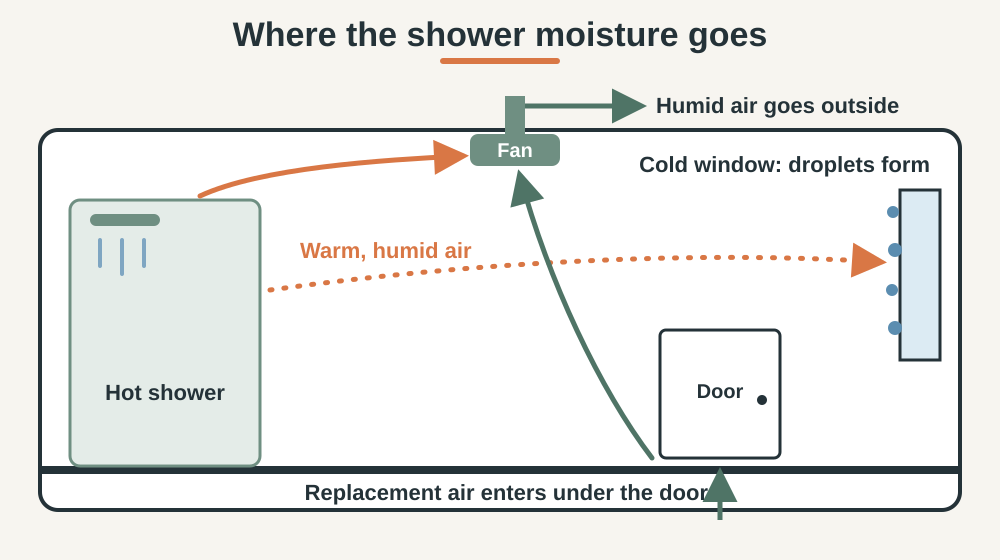
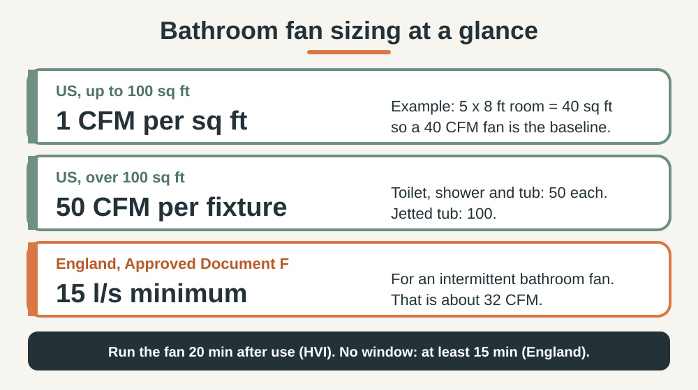

HOME CARE · BATHROOM
How to Reduce Bathroom Condensation: A Step-by-Step Fix
Foggy mirrors are normal. Water running down the window and damp corners that stay wet for hours are not. This guide shows how to measure the problem and fix it in the right order.
Short answer: condensation means warm, humid air is reaching a cold surface with nowhere to go. Run the fan until 20 minutes after your shower, leave a gap under the door for replacement air, and check the fan is big enough and vents outside. Measure first and aim for 30% to 50% humidity.
1. Why bathroom condensation happens
Warm air holds more water vapor than cool air, and a hot shower adds a lot of vapor quickly. When that air touches a colder window, mirror, tile or outside wall, part of it turns back into liquid. The EPA notes that condensation on windows can be a sign of high indoor humidity and should be investigated.
It matters because the same moisture feeds mold. The EPA states that excessive moisture can cause mold to grow in the bathroom, and its basic advice is to run the exhaust fan or open the window when showering.

2. Measure before you change anything
A humidity meter (hygrometer) turns a feeling into a number. The EPA points to inexpensive meters sold at hardware stores.
- Place the meter at head height, away from the spray, and note the reading before you shower. That is your baseline.
- Shower as usual with the fan on.
- Note the reading when you finish, then again after 20 minutes of fan.
- Compare. A reading still far above baseline after 20 minutes points to a fan, airflow or duct problem (sections 3 to 5).
The EPA target is below 60% relative humidity, ideally 30% to 50%. If your baseline is above 60% before you shower, the moisture comes from elsewhere in the home, so sections 6 and 7 matter most.
3. Use the fan the right way
Most condensation problems start with fan habits, not hardware. The Home Ventilating Institute (HVI) recommends leaving the fan on for 20 minutes after use. In England, guidance for a bathroom with no openable window is at least 15 minutes after the room is vacated.
- Turn it on before the water.
- Add a run-on timer so the 20 minutes happens without you remembering.
- Humidity sensors are fine if they keep a manual override.
- Clean the grille. Dust slows the airflow. Switch the power off at the breaker before removing any cover.
Tissue test: with the fan running, hold one sheet of toilet paper against the grille. If it hangs there, the fan is moving air. If it flutters or drops, clean the grille and check the duct (section 5).
4. Let replacement air in under the door
A fan can only push air out if other air can come in. HVI states that bathroom doors need to be undercut to allow make-up air. England's Approved Document F expects internal doors to leave a gap equal to a 10 mm undercut on a standard 760 mm door, about 10 mm above the finished floor.

Door test: repeat the tissue test with the door closed, then open a hand's width. If the tissue holds much better with the door ajar, the fan is starved of air. Trim the bottom of the door or remove any draught strip from it. Keep draught-proofing for external doors, as in our drafty door guide.
5. Check fan size, location and duct
HVI recommends 1 CFM (cubic feet per minute) per square foot for bathrooms up to 100 square feet, about eight air changes per hour. A 5 by 8 ft bathroom is 40 square feet, so 40 CFM is the baseline. Above 100 square feet, HVI adds 50 CFM for each toilet, shower and tub, and 100 CFM for a jetted tub. In England, Approved Document F sets a minimum of 15 litres per second for an intermittent bathroom fan, about 32 CFM.

- Position: HVI says over or near the shower or tub. Approved Document F says as high as practical, no more than 400 mm below the ceiling.
- Destination: extract air must go outside, not into the attic or a ceiling void.
- Duct: use rigid duct where you can. Flexible duct only for the final connection, at most 1.5 m, pulled taut, with few bends.
- Real airflow: Approved Document F tells installers to measure every fan with a calibrated device, because a label rating does not guarantee what the fan moves once ducted.
- Noise: a loud fan gets switched off. Compare sone ratings when you shop, where lower is quieter.
6. Cut the moisture and dry the cold surfaces
- Lower the water temperature a little. EPA advice, as summarized by NC State Extension, is that cooler water makes less steam.
- Wipe the coldest surfaces (window, glass, mirror) after the shower. A squeegee takes 30 seconds.
- Do not store moisture in the room. Wet towels keep the air humid. See how to stop bathroom towels smelling musty.
- Dehumidifier last. The EPA suggests one for rooms like basements. Planning a basement bathroom? See our macerating toilet guide.
7. Safety and when to call a professional
- Power off first at the breaker before opening a fan housing. If the fan sits over a tub or shower, check its label says it is approved for that spot.
- Combustion appliances. Approved Document F warns that fans can cause combustion gases to spill from open-flued appliances, even in another room. With a gas water heater, furnace, boiler or open fire, ask a qualified heating professional before fitting a stronger fan.
- New ducts or wiring through a wall or roof are a job for a licensed contractor. In England, replacing a fan on existing cabling does not need to be notified to building control, but new work may.
- Possible leak: wet patches when nobody has showered, soft plaster or spreading stains call for a plumber, not a fan.
- Mold that returns. The EPA says mold grows back if the moisture source is not fixed. If it returns after you improve ventilation, get the room checked.
This guide is general information, not professional advice. Local rules differ.
8. Common mistakes
- Switching the fan off when you step out. The moisture is still on the walls.
- Blocking the door gap with a draught strip while the fan runs.
- Venting into the attic or ceiling void, which hides the damp problem.
- Long, crushed flexible duct, which cuts the airflow of a good fan.
- Cleaning mold without fixing the moisture.
Frequently Asked Questions
What humidity level should my bathroom have?
The US EPA suggests indoor relative humidity below 60%, ideally 30% to 50%. A shower will spike it. What matters is how fast it falls back afterward.
How long should the bathroom fan run?
HVI recommends 20 minutes after you use the bathroom. In England, a bathroom with no openable window should have a fan that keeps running for at least 15 minutes after you leave. A timer switch handles this for you.
Is it better to use the fan or open a window?
The EPA says either works while showering. A fan is more reliable because it works in any weather. A window helps only when the air outside is drier than the air inside.
Do I need a dehumidifier?
Not first. Fix the extraction and the replacement air before anything else. The EPA suggests a dehumidifier for rooms that stay too humid, such as a basement.
How do I tell condensation from a leak?
Condensation appears on cold surfaces during or after showers and wipes away. A leak shows up when nobody has showered, keeps getting worse, or stains and softens the material. If you suspect a leak, call a plumber.
Sources and last review
Last reviewed: October 7, 2026. US figures come from HVI and the EPA. UK figures come from Approved Document F for England (2021 edition). Check the rules for your country and local authority before installing or replacing a fan.